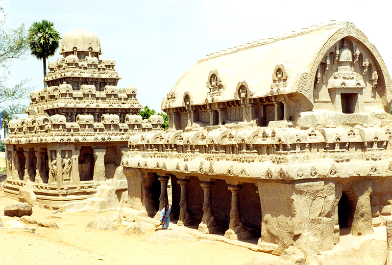
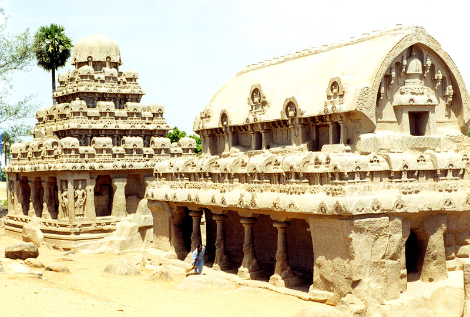

Mahabalipuram

 

Content
I organized the content from various websites about Mahabalipuram and then rephrased in my own words. I designed this webpage for who wants to know about this place and who intends to visit this place.
Navigation
I used a horizontal menu for navigation. Some of the menus items have sub menu items. I designed in such a way that, user do not find it confusing to move through the pages. And also I used opacity parameter to grant transparency for the menu items.
Design
I used multiple divs for the design of this webpage. Each div is positioned in a such a way that it do not disturb the content of other divs.
Organization of Information
I used same format for all of the web pages like a image on the right that is associated with the topic and respective content .In some pages I have used more than one images in some pages to illustrate the importance of that particular place.
XHTML & CSS
I used XHTML strict doctype for all the pages. And each page is successfully validated without error in the w3 validator. And there is no browser compatibility issues.CSS produces proper colors and div structure without problems.